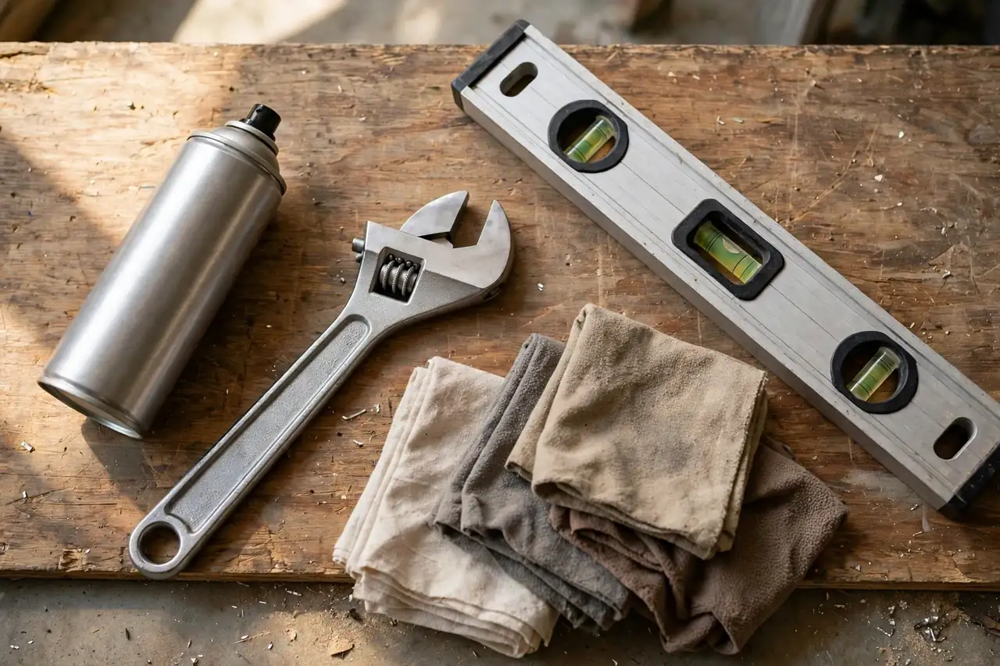

Garage Door Off-Track, Cable & Roller Repair
Garage Door Off-Track Repair in Zion, IL
A door that hangs crooked, jams halfway, or has rollers out of the rail is an off-track door. Garage door off-track repair in Zion, IL covers the whole guidance system: tracks, rollers, hinges, and lift cables, which fail together and are checked together. Do not force the door, and do not keep running the opener. This page explains causes, cables, tracks, rollers, and hinges, and links to garage door spring replacement in Zion, IL where balance is part of the picture.
Service overview
What Causes a Garage Door to Come Off Its Track?
General guides group the causes into four: cable failure, roller failure, track damage or misalignment, and impact. A snapped or frayed cable drops one side and derails rollers. Worn rollers bind and strain tracks. A bent track derails rollers and stresses cables. A vehicle bump can bend a track, pop a roller, or do both at once.
Because the parts fail together, they are diagnosed together. The visible symptom, a crooked or jammed door, rarely identifies the failed part on its own: the track, rollers, cables, hinges, drums, and brackets are checked as one system. In the older grid, alley-loaded detached garages in Kedron Park and Central Zion add threshold grading and rear-access questions to the same check, while attached garages in West Zion raise the same hardware questions in a different garage shape.

Practical benefits
Why an Off-Track Door Should Not Be Forced
The safety framing for an off-track door is simple: stop, do not force it, and do not keep running the opener. Forcing a crooked door makes the original failure worse in four ways.
Forcing Bends More Hardware
A door that is already out of square bends further when forced. Rollers that are still in the rail can pop out, a bent track section can crease, and hinges can distort. Each new bend adds to the original failure instead of clearing it.
The Opener Is Not a Lifting Tool
Running the opener against a jammed door strains the motor unit and drive, and can damage the parts that were still working. If the door will not travel, the opener is fighting the jam, not fixing it. Opener behavior is covered on the garage door opener repair and installation in Zion, IL page.
A Crooked Door Can Drop
A door hanging on one side is held by whatever hardware is still engaged. Cables and springs work under tension, and a door that drops or slams is a balance failure as well as a track failure. Keep people clear of a hanging door.
Stop and Look From a Distance
What can be observed safely is the door's position: crooked or level, a roller visibly out of the rail, a cable hanging loose, or a gap between roller and track. Observation helps the call. Hands-on work on cables and springs stays technician-only.
What a Visit Typically Involves, in General Terms
How an Off-Track Problem Is Assessed
Assessment starts with the call and continues with a system check. The order below keeps the door still while the failure is understood, rather than moving it and making the failure worse. That sequence is general-guide language: the exact sequence for any visit is not asserted here as this business's sequence, and the contents of a visit are established on the call.
STEP 01
Describe What the Door Is Doing
Call (224) 842-7761 and describe the door: crooked, jammed, stuck open, stuck shut, or moving jerkily. The description, not a part name, is what matters, because most callers see the symptom before they see the failed part.
The guidance system
Tracks, Rollers, Cables, and Hinges
Track Realignment
Realignment returns a track to plumb and square without replacing it. It applies when the track itself is sound but has shifted, loosened, or been pulled out of line by the same failure that derailed the rollers.
Track Section Replacement
When a track section is bent, creased, or crushed, the section is replaced rather than straightened. Replacement restores a true running surface for the rollers, which a creased section cannot provide.
Bent Track: Repair or Replace
Whether a bent track is straightened or replaced depends on the bend. A slight bend in sound metal is a different question from a crease or a crush. The track has to guide rollers smoothly along its whole length, or the door will bind again.
Rollers
Rollers carry the door along the track and fold at the joints. Worn rollers bind, wobble, and make noise, and a worn roller can leave the rail under load. Roller replacement is part of the track-system check, not a standalone job.
Roller Noise Diagnosis
Sounds split by cause in general guides: grinding or scraping points toward worn rollers or track problems, while squeaking or squealing points toward lubrication or roller wear. The sound distinction matters, because the two point to different checks. Lubrication is covered on the garage door maintenance and tune-ups in Zion, IL page.
Lift Cables
Lift cables wind on drums above the door and carry its weight with the springs. Snapped, frayed, loose, or off-drum cables are the cable failure modes in general guides. Cables work under tension and are technician-only work.
Paired Cable Replacement
Whether cables are replaced in pairs is a question to ask, along with what else is checked with them: drums and brackets. Cables on the two sides of a door share the same age and load, so the paired question is worth asking rather than assuming either way.
Cable Drums and Brackets
Drums wind the cables and brackets anchor the system. A cable failure can mark a drum or loosen a bracket, and a damaged drum can damage a new cable. Drums and brackets are checked with the cables, not after them.
Hinges
Hinges join the sections and fold as the door travels. Worn, cracked, or bent hinges let sections sag and bind, and a hinge failure can start an off-track failure. Hinge condition is part of the same system check as tracks and rollers.
Jerky or Shaking Movement
Slow, jerky, hesitant, or shaking travel has several possible causes: binding rollers or track, balance, or opener force. The symptom is multi-cause, so the check crosses systems, with links to the spring and opener pages where those causes fit.
Impact Damage
A vehicle bump bends tracks, pops rollers, and dents sections in one event. Impact damage is assessed across the track system and the door leaf together: the track questions stay here, and section questions go to the garage door panel replacement in Zion, IL page.
Balance and the Spring System
Cables and springs interact: a cable failure changes the load on the springs, and a spring failure changes the load on the cables. Balance questions, heavy doors, and doors that will not stay open are covered on the garage door spring replacement in Zion, IL page.

Where this service fits
Off-Track Situations in Zion
Backed Into the Door, Roller Out of the Rail
A bumper tap bends the lower track or pops a bottom roller, and the door hangs crooked. The track, roller, and section are assessed together, because one impact reaches all three. Do not force the door back into line.
A Loud Bang, Then the Door Will Not Open More Than a Foot
A bang followed by a door that barely lifts points toward springs and cables together. The door is heavy because the counterbalance has failed, and the cable side of the failure is checked here while the spring side is covered on the garage door spring replacement in Zion, IL page.
A Door Stuck Open, With Security on Your Mind
A door stuck open leaves the garage unsecured, which is an emergency framing before it is a repair framing. Triage for a stuck-open door is covered on the emergency garage door repair in Zion, IL page. Do not force the door shut.
Grinding and Shuddering, With a Visible Roller Gap
Grinding points toward worn rollers or track problems, and a gap between roller and rail confirms the door is not tracking true. The roller and track check is here; lubrication and routine checks are on the garage door maintenance and tune-ups in Zion, IL page.
Local execution
Off-Track Repair in Zion's Garage Patterns
Zion has two garage patterns, and off-track questions arise in both. The older eastern and central grid is characterized by alley-loaded detached garages, while 1990s and later western subdivisions are attached and garage-forward with two- and three-car doors. The hardware is the same system in both patterns; the access and threshold questions differ.
Kedron Park
The best-evidenced alley-garage area in the city: gravel back alleys lined with detached garages and carports, with 1950s to 1970s ranch and split-level stock. Threshold grading and alley access are the local topics alongside the hardware check.
Central Zion
Median year built 1950, with alley-loaded detached garages characteristic of the older grid. Door and opener ages vary widely, and replacement history on pre-1930s lots is unevidenced.
South Central Zion
Median year built 1934, the oldest housing grouping in the city. Alleyways with garages are evidenced, and detached single and one-and-a-half-car garages predominate on the oldest lots, with doors of unknown replacement history.
Joanna
1940s to 1970s split-level, raised-ranch, and Cape Cod stock, median year built 1964. Attached one- and two-car garages are common in split-level and raised-ranch designs, often tuck-under or front-facing, with detached garages on older lots.
West Zion
The western sector parent, median year built 1998. Attached, garage-forward, two- to three-car garages predominate across the sector's subdivisions, with original doors and openers from the 1990s to 2010s build waves inferred to be at different ages by subdivision.
Alley-Loaded Detached Garages
The 1901 plan provided alleys for utilities and garbage removal, and alley-loaded detached garages remain characteristic of the older grid. Rear-access security, alley grading at the threshold, and detached-garage electrical supply for openers are the distinct topics for these doors.
Cold Winters
Cold winters bring general-guidance failure language only: cold-stiffened springs, brittle seals, and opener strain in cold weather. January mean temperatures run around 20°F, with about 38 inches of snow a year in the nearest long-record normals. No figures beyond those are stated.
Homes Built Before 1980
64.4% of Zion housing was built before 1980 (ACS 2020–2024 5-year). Older hardware is an inference from housing age, not a measured survey: no garage survey of Zion exists, and door and opener ages cannot be inferred from house age alone.
Attached Garages in Newer Subdivisions
1990s and later subdivisions are attached and garage-forward. Original doors and openers from those build waves are inferred to be now 15 to 35 years old depending on the subdivision, which is the replacement-cycle age band for rollers, cables, and tracks as well as doors.
Problems we solve
Track, Cable, Roller, and Hinge Problems
The four problems below are track-system failures. Each names the system it belongs to, because several of them cross into springs, openers, or panels.
Door Leaning to One Side After a Loud Bang
A lean after a bang points toward a cable or spring failure on one side. The cable side is checked here; the spring side is covered on the garage door spring replacement in Zion, IL page. Keep people clear and do not force the door level.
Rollers Popped Out of the Track After a Bumper Tap
Impact pops rollers and bends tracks in one event. The track section, the rollers, and the damaged section are assessed together, with section questions going to the garage door panel replacement in Zion, IL page.
Door Stuck Halfway Open and Humming
A door stuck halfway with the opener humming points toward binding, balance, or opener strain. The binding check is here; opener diagnosis is on the garage door opener repair and installation in Zion, IL page, and balance is on the spring page. Stop running the opener.
Frayed Cable Causing the Door to Drop on One Side
A frayed cable drops one side and derails rollers. Frayed, snapped, loose, or off-drum cables are technician-only work under tension. Whether cables are replaced in pairs, and what is checked with them, is worth asking about on the job rather than assuming.
Garage door work in Zion, IL.
Clear explanationsCareful workOpen 24 hours, every dayBased in Zion, IL
Codes and safety
Codes and Safety in Zion
Off-track work involves parts under tension and a door that may not stay where it is put. The statements below are the only code, permit, and licence statements this page makes. Cables and springs stay technician-only work: this page explains what to look for, not how to repair tensioned parts.
- Zion has adopted the 2021 International Building Code and 2021 International Residential Code, effective January 1, 2025, with local amendments.
- Illinois does not issue a statewide licence covering garage-door work; the only general building-trade contractor licences issued statewide are for roofing and plumbing. Whether City of Zion contractor registration applies to garage-door contractors was not confirmed — ask the City of Zion Building Department.
- Federal rules (16 CFR Part 1211, UL 325) require residential automatic garage door operators to have entrapment protection: an inherent reversal system plus a secondary entrapment protection device (such as photoelectric sensors or an edge sensor) or a constant-contact control. Test sensors and auto-reverse regularly.
- No Illinois battery-backup mandate for garage door openers was found.
- Whether a City of Zion permit is required for garage-door work, and any fee, was not confirmed on a City source. Contact the City of Zion Building Department, 2828 Sheridan Road, (847) 746-4018, before work begins.

Where we work
Garage Door Work Across Zion, IL
Central ZionSouth Central ZionBeulah ParkJoannaHermonKedron ParkWest ZionHarbor RidgeShepherds CrossingLorelei AcresStonebridge CrossingSunset RidgeCypress ParkCountrywood HillsBrighton PondsButterfield PlaceWestside HillsHighland MeadowsSheridan HillsSheridan LakeSheridan Lake ViewBartletts North Shore Acres
View all Zion areas Notes from local customers
What Zion Customers Say
The crew was proficient and competent, and they made my garage seem better than before.
Premium components were used to rebuild my garage door for reasonably low running cost.
I had a thorough safety check on my garage door, the technician was very detailed.
General guides group the causes into cable failure, roller failure, track damage or misalignment, and impact. A snapped cable drops one side and derails rollers, worn rollers bind and strain tracks, a bent track derails rollers and stresses cables, and a vehicle bump can bend a track or pop a roller.
No. Do not force the door and do not keep running the opener. Forcing bends more hardware, and running the opener against a jam strains the parts that were still working. Leave the door where it is, keep people clear of a hanging door, and describe the fault by phone.
Whether cables are replaced in pairs is a question to ask on the job, along with what else is checked with them: drums and brackets. Cables on the two sides of a door share the same age and load, so the paired question is worth asking rather than assuming either way. Cable work under tension stays technician-only.
Realignment returns a sound track to plumb and square. Track section replacement swaps a bent, creased, or crushed section for a true running surface. Roller replacement swaps the worn rollers that carry the door. The three are combined when the check shows more than one failure, because the parts fail together.
Grinding or scraping points toward worn rollers or track problems, while squeaking points toward lubrication or roller wear. Jerky or shaking travel is multi-cause: binding rollers or track, balance, or opener force. The check crosses systems, with balance on the spring page and opener force on the opener page.
It depends on the bend. A slight bend in sound metal is a different question from a crease or a crush. The track has to guide rollers smoothly along its whole length, so a section that cannot run true is replaced rather than straightened.
Keep exploring
Other Garage Door Work in Zion, IL
Open 24 hours, every day
Need Garage Door Help in Zion?
Call (224) 842-7761 and describe what the door is doing: crooked, jammed, stuck open, or stuck shut. Do not force the door. Open 24 hours, every day.
Start with the basics
Call Milwaukee Garage Doors Inc
Reach us at (224) 842-7761 for garage door off-track repair in Zion, IL. Describe the door's position and what happened, and the call can establish the next step. Open 24 hours, every day.
CALL(224) 842-7761
HOURSOpen 24 hours, every day